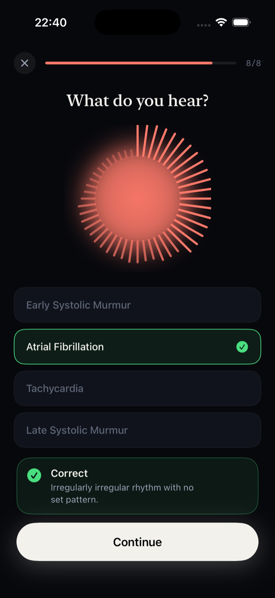
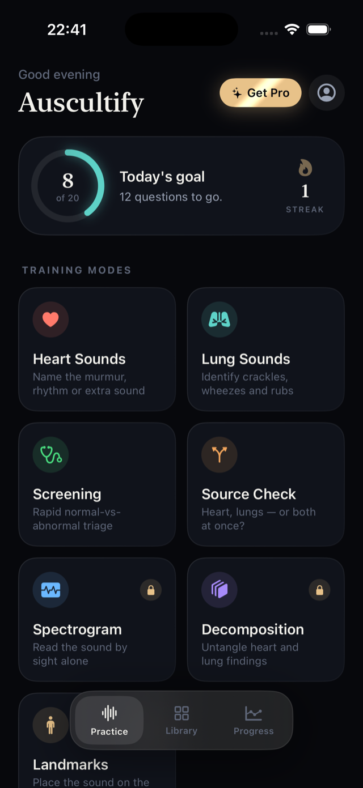
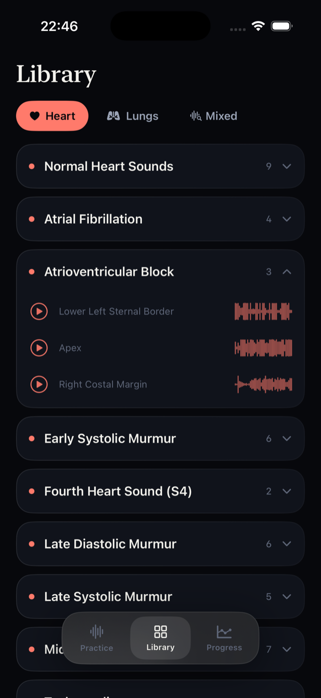
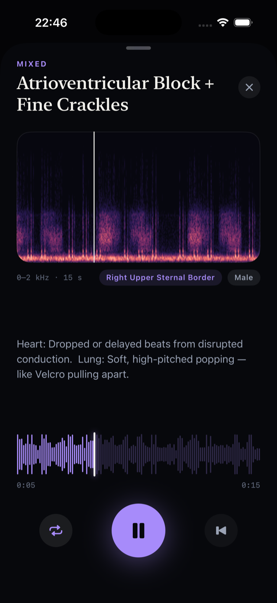
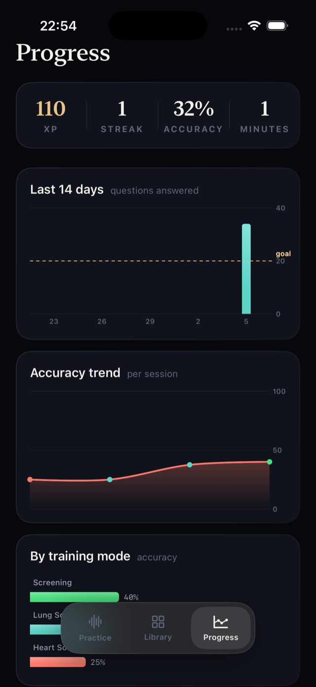

The heart sounds app that trains your ear like a clinician's
Auscultation practice that actually works: daily quizzes on real heart murmurs, lung crackles and wheezes — recorded from actual patients, not synthesizers. Learn to recognize what you'll hear on rounds.
Free to download · Pro includes a 7-day free trial · Cancel anytime

Built for the way clinical skills are actually learned
Short sessions, real audio, instant feedback — the same active-recall loop that outperforms passive reading by more than 2× after six weeks.




How Auscultify works
Ten minutes a day is enough. Here's the loop that builds a clinical ear.
Listen to a real recording
Every sound was captured from actual patients across 12 anatomical sites — aortic and pulmonic areas, lower left sternal border, apex, costal margins and six lung fields. No synthesized approximations.
Name what you hear
Is it an early systolic murmur, atrial fibrillation, fine crackles — or normal? Answer, and get instant feedback with the clinical reasoning behind every sound.
Let the app target your gaps
Missed sounds are weighted toward the front of your queue until you master them. A daily goal, streaks and accuracy trends keep the habit going through rotations and exam season.
Heart & lung modes
Murmurs, gallops, rhythms, crackles, wheezes and rubs — plus rapid normal-vs-abnormal screening and heart-or-lungs source checks.
Spectrogram training (Pro)
Learn to read the waveform by sight, untangle mixed heart-and-lung recordings, and drill all 12 auscultation sites on an interactive chest-wall map.
Made for exam season
Trusted by 150,000+ medical students, nursing students, residents and PAs preparing for rotations, OSCEs, USMLE and NCLEX.
Auscultation guides
Free, practical answers to the questions every student asks — and how to train each skill until it sticks.
How to Learn Heart Murmurs
A four-step method for going from "I hear... something" to naming the murmur with confidence.
Read the guide →Crackles vs Wheezes
The timing, pitch and pattern cues that separate the two most-confused lung sounds.
Read the guide →S3 vs S4 Heart Sounds
Ken-tuck-y vs Ten-nes-see: how to tell the gallops apart and what each one means.
Read the guide →Systolic vs Diastolic Murmurs
A timing-first framework for classifying any murmur you hear.
Read the guide →Heart Sounds Quiz: Test Your Ear
Why quizzing beats re-listening, and how to structure practice that transfers to the bedside.
Read the guide →Auscultation Practice That Works
A 10-minute daily routine backed by learning science.
Read the guide →Lung Sounds for Nursing Students
The six adventitious sounds to know for NCLEX and the floor.
Read the guide →Cardiac Auscultation for OSCEs
How to run the listening portion of the cardio station without freezing.
Read the guide →Heart & Lung Auscultation Sites
All 12 landmarks — where to place the stethoscope and what you should hear at each.
Read the guide →What Does AFib Sound Like?
Recognizing the irregularly irregular rhythm by ear — with real recordings.
Read the guide →Frequently asked questions
What is the best app to learn heart sounds and murmurs?
The best heart sounds app is one that quizzes you on real patient recordings with instant feedback — passive listening doesn't build recognition. Auscultify does exactly that with 245 clinical recordings across six quiz modes. Learn more →
How do I practice auscultation without patients?
Short daily quiz sessions on recorded sounds are the proven substitute: active recall with feedback outperforms passive reading by more than 2× after six weeks. Set a 10–40 question daily goal in Auscultify and let it weight your missed sounds. Learn more →
How can I tell crackles from wheezes?
Crackles are discontinuous popping sounds, usually inspiratory — think Velcro pulling apart. Wheezes are continuous high-pitched whistles, usually expiratory. Timing + continuity is the fastest discriminator. Learn more →
What's the difference between S3 and S4 heart sounds?
S3 follows S2 in early diastole (volume overload, "Ken-tuck-y"); S4 precedes S1 in late diastole (stiff ventricle, "Ten-nes-see"). Hearing them side by side is the only way the difference sticks. Learn more →
Does Auscultify help with USMLE, NCLEX and OSCE prep?
Yes — the library covers the murmurs, gallops and adventitious lung sounds those exams test, and Landmarks mode drills the stethoscope placements OSCE examiners score. Learn more →
Are the recordings real or synthesized?
Every recording was captured from actual patients across 12 anatomical sites. You train on the same mid-systolic murmurs, S3 gallops, fine crackles and expiratory wheezes you'll hear on rounds. Learn more →
What does atrial fibrillation sound like?
Irregularly irregular — no repeating pattern, varying beat intensity, no predictable gap. Auscultify has AF recordings at multiple sites so you can hear how it changes across the precordium. Learn more →
Is Auscultify free?
Yes — download free and practice every day. Pro adds spectrogram training, mixed-sound decomposition, landmark drills and unlimited sessions, with a 7-day free trial. Cancel anytime. Learn more →
Your ear is a skill.
Start training it today.
Join 150,000+ students and clinicians building auscultation skills one daily session at a time. Free to download — Pro trial included.
Download Auscultify on the App Store